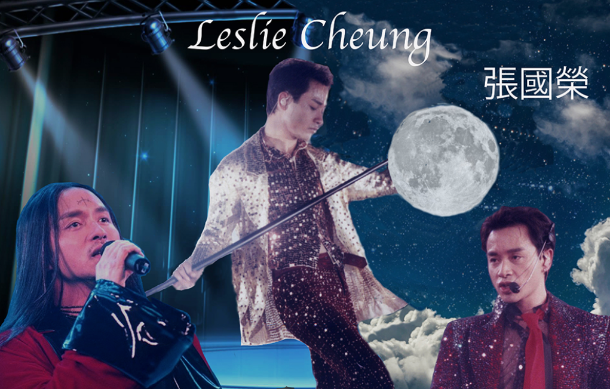
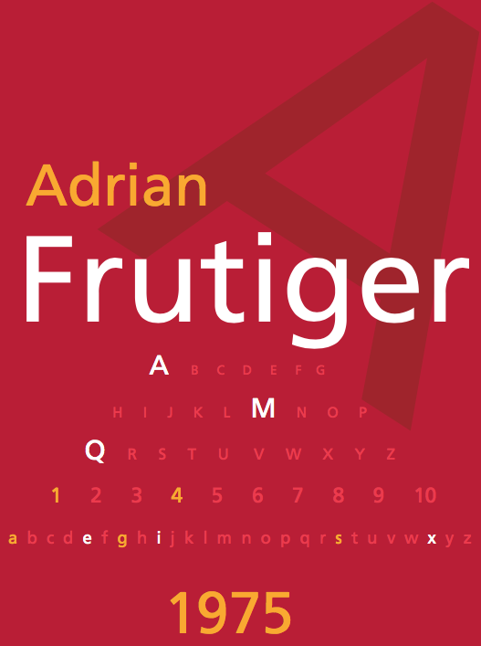
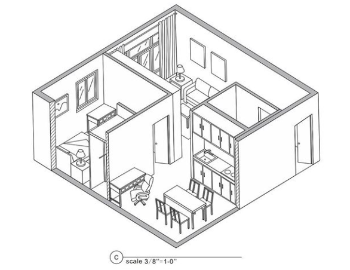

Concert poster

This is a concert poster that I designed for my favorite singer Leslie Cheung. This poster tries to reflect the legacy of his life’s work of the music and wants to exhibit his art in a museum of art, history and science and some presentation of their work & legacy. I created this poster different color and typography and combined imagery.
Self-Portrait

In this drawing, I want to convey that letterforms have their own characteristics just as we have different characteristics. In this drawing, I only used letters and symbols to make the portrait, and the Letters I used are in bold, subtle, thick, thin, compressed, angular. These qualities can visually suggest different moods and meanings.
Typeface-poster

The typeface-poster is from Des16, this poster is to explore the visual characteristics of the typefaces. To gain an understanding of the history and anatomy of typeface designs (typography). To develop an awareness of the history of type in graphic design and apply that to current usage. I only used type and color in this poster; using type as the only graphic element in the poster, which conveys the most important visual properties of the face. The poster tries to reflect the nature of the typeface as currently used and as intended by the original typeface designer.
Postcard

This postcard is one of the projects from Des15. This postcard is made to show the ability to combine images and color with using Illustrator. In this postcard, I used the images of the person playing guitar repetitively and composed them into a new picture.
Apartment Design

This is an apartment that I made for my des115 class. This apartment is totally imaginary, so I will call this as my dream house because I designed this especially for myself.
Sculpture

This picture is sketched based on my own sculpture, which is made of wood, plastic, and glue. This assignment from des 115 is trying to show people my skill of how I use the software to sketch, and also, it is a one-point perspective sketch.